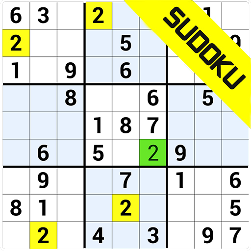
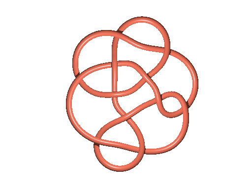

1.SUDOKU

Sudoku is one of my favourite game. Being interested in technology I built a sudoku game using the C++ language.Sudoku is a logic-based, combinatorial number-placement puzzle. In classic Sudoku, the objective is to fill a 9 × 9 grid with digits so that each column, each row, and each of the nine 3 × 3 subgrids that compose the grid contain all of the digits from 1 to 9. As game starts, it gives a sudoku table to solve.The user have to put coordinates of the small box that they want to fill in.After finishing the game they have to click enter to know if it is solved correctly or not.If not able to solve then press"-1" then it would be solve by solved function that will return the right answer. I built function that can directly solve sudoku table.
Major functions used in sudoku game
-
Recursion(Majorly to sove the sudoku)
-
2-D Array(To store the sudoku element)
-
Function
2.Knot theory

Knot theory is a theory that connects biology with discrete mathematics that is widely used in computer science.knot theory is the study of mathematical knots. While inspired by knots which appear in daily life, such as those in shoelaces and rope, a mathematical knot differs in that the ends are joined so it cannot be undone, the simplest knot being a ring. DNA recombination can be explained with the help of knot theory.Read research paper about knot theory
Major topics studied in knot theory
-
Mathematical knots
-
Types of knots
-
Reidemeister move
-
Tricolorability
-
Alexander polynomial
3.My Portfolio
A portfolio is a living and changing collection of records that reflect your accomplishments, skills, experiences, and attributes. It highlights and showcases samples of some of your best work, along with life experiences, values and achievements. I was intersted to make my own portfolio that can show my skills and achievements and everytime I update this potfolio it shows how much I have accomplished.Eagerness to do something new and change in my portfolio is of great fun.I made my portfolio using HTML(Hypertext Markup Language) and basics of CSS.Using my frontend skills to develop this portfolio.
Major parts of my portfolio
About_me section
-
My projects section
-
My achievements
-
My contacts